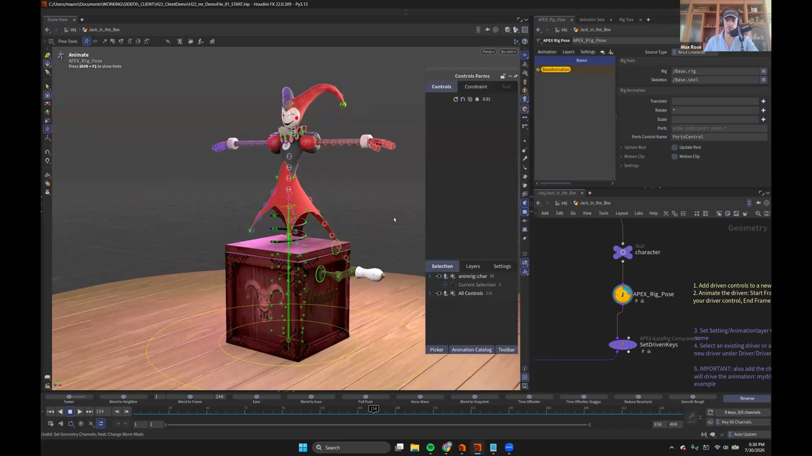
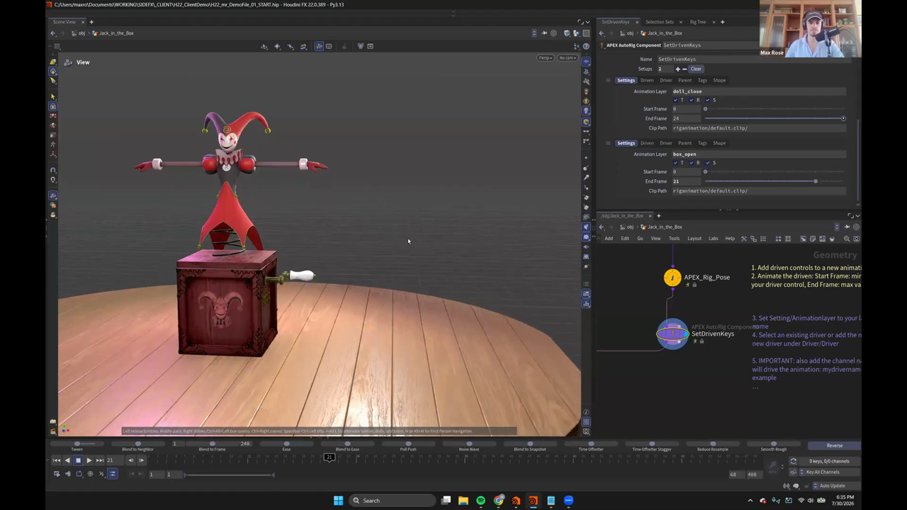

Houdini 22 KineFX アニメーション 3 — Set Driven Key でびっくり箱の仕掛けを作る
出典: Animate in KineFX | Part I | Max Rose | Houdini Illume （SideFX 公式ウェビナー / 講師 Max Rose さん / Houdini FX 22.0.389 / 1:22:20 / 英語）の 27:13〜37:20 部分。 このページは、上記の動画を見ながら自分用にまとめた日本語の学習メモです。SideFX 公式の翻訳ではありません。 前回はRagdoll と Shot Sculptでした。
この記事で扱うこと
題材が Harry から Jack in the Box（びっくり箱）に変わります。 レバーを回すと箱が開いて人形が飛び出す、という定番の動きを作るのですが、 その仕掛けの部分を Set Driven Key で自動化しておくのがこの回の主題です。
一度仕掛けを作ってしまえば、あとはいつでも好きなときにアニメーションできる、という発想です。
1. リグは意図的にシンプル

Jack in the Box のリグは驚くほど単純でした。
- バネの部分は3つのコントロールを持つスプライン1本だけ
- 人形の残りの部分はすべて FK
凝った仕掛けは何も入っていません。講師の方も 「やろうと思えばスプライン周りにもっとコントロールを足せますが、 今回の目的にはこれで十分でした」と話していました。
Apex Add Character で Jack_in_the_Box と名付け、
Scene Animate を繋ぐところは前回と同じです。
2. APEX の Set Driven Key は「アニメーション全体」を駆動する
ここが他のソフトと違う、と強調されていた点です。
APEX の Set Driven Key は、1つのコントロールが1つのパラメータを動かすという よくある形ではありません。何かが「アニメーション全体」を駆動します。 極端な話、歩行サイクルまるごとを Set Driven Key に差し込むこともできます。
今回でいえば「レバーの回転」が「箱が開くアニメーション」を駆動します。 必要なのは次の2つです。
- 人形を箱に詰め込むためのレストポーズ
- 箱の蓋を開けるメカニズム
3. APEX Rig Pose でアニメーションレイヤーを作る
使うのは APEX Rig Pose です。
KineFX の Rig Pose とは別物で、こちらは APEX 用です。
操作感はアニメーションステートによく似ています。
上の画像がそのパネルです。できることがいくつか紹介されていました。
| 項目 | 内容 |
|---|---|
Update Rest | キャラクターのレスト位置を更新します（今回は使わず） |
Source Type | Apex Character と Skeleton を切り替えられます |
| ジョイントの昇格 | 元々コントロールが無かったジョイント位置を昇格できます。今回は不要なスパイラルジョイントが出てきたので消していました |
1つ目のレイヤー: 人形を畳む
- 箱のコントロールを隠し、人形のコントロールをすべて選択します
- 新しいレイヤーを作り、
doll_closeと名前を付けます Ctrl+Rを押してフレーム24へ移動します- 鎖骨・首・腕などを畳んで、箱に詰め込める姿勢にします
このレイヤー名がそのまま Set Driven Key の名前になります。 あとで AutoRig Component から参照するので、名前は意味のあるものにしておく必要があります。
2つ目のレイヤー: 箱を開ける
次に箱の蓋を回転させるコントロールを触ろうとすると、
「control not added to active layer」という警告が出ます。
いま doll_close レイヤーがアクティブだからです。
そこでcreate layer from selected controls のボタンを押して、
そのコントロール用に新しいレイヤーを作り、box_open と名付けます。
Shift+Rで回転にキーを打ちます- フレーム12あたりまでで開き切るようにします
- 少し行き過ぎてから戻るフォロースルーを付けて、勢いよく開くようにします
人形側のアニメーションは表示していると邪魔なので、 一時的にオフにしながら作業していました。
4. AutoRig Component に登録する

作った2つのレイヤーを、APEX AutoRig Component の
SetDrivenKeys に登録します。
上の画像がその設定です。Setups を 2 にして、それぞれこう入れます。
| Setup | Animation Layer | Start Frame | End Frame |
|---|---|---|---|
| 1 | doll_close | 0 | 24 |
| 2 | box_open | 0 | 21 |
Clip Path はどちらも rig/animation/default.clip/ のままです。
各 Setup には Settings / Driven / Driver / Parent /
Tags / Shape のタブがあります。
ネットワークには、この手順を書いた付箋が貼られていました。 「driven するコントロールを新しいアニメーションレイヤーに追加する」から 「driver のチャンネル名も忘れずに追加する」まで、5ステップにまとめられています。
結果
コンポーネントに入ると歯車のコントロールが1つ生えます。
これを選ぶと、少し考えたあとにスライダーが2本出てきます。
box open と doll close です。
この時点で、スライダーを動かせば箱が開き、人形が畳まれるようになりました。
5. レバーの回転に繋ぐ
スライダーのままでも動きますが、実際にレバーを回して開いてほしいので、 クランクのコントロールを driver に指定します。
コントロールのパスを取得する小技
コントロールの名前を目で見て覚えて手で入力する、ということをしなくて済みます。 Current Selection の項目をShiftを押しながら選択すると、 選択中のコントロールが取れます。そのままCtrl+Cでコピーして貼り付けられます。
貼り付けたあと、駆動に使うチャンネルとして RX（Rotate X）を指定します。
これでクランクの回転Xチャンネルがアニメーションを駆動するようになります。
回転量の範囲を決める — fit min / fit max
そのまま繋ぐと問題が起きます。
レバーを少し回しただけで箱が開き切ってしまいます。 Rotate X の値が 0 から 1 の範囲にすぐ到達してしまうためです。 やりたいのは「何回もぐるぐる回して、それから開く」という動きです。
- 実際にレバーを何回転か回してみて、そのときの数値を選択します
- その値を
fit minに貼り付けます - さらに少し回して、その値を
fit maxに貼り付けます
これで回転量の範囲が決まり、 何回転かさせてから箱が開く、という自然な動きになりました。
動画では貼り付けた数値がたまたま 666 になっていて、 「縁起が悪いので消しておきます」と言って直していました。
この記事のまとめ
- APEX の Set Driven Key はアニメーション全体を駆動できます。1コントロール対1パラメータではありません
- 駆動させたいアニメーションは
APEX Rig Poseでアニメーションレイヤーとして作ります - レイヤー名がそのまま Set Driven Key の名前になりますので、意味のある名前を付けます
- 別のコントロールを触ろうとして「control not added to active layer」が出たら、create layer from selected controls で新しいレイヤーを作ります
AutoRig ComponentのSetDrivenKeysに、レイヤー名とフレーム範囲を登録します- driver のパスは Current Selection を
Shift選択してCtrl+Cで取れます - 効きが速すぎるときは
fit min/fit maxに実際の回転値を入れて範囲を決めます
次はいよいよ Secondary Motion で人形をぐにゃぐにゃ動かし、Motion Mixer で仕上げます。